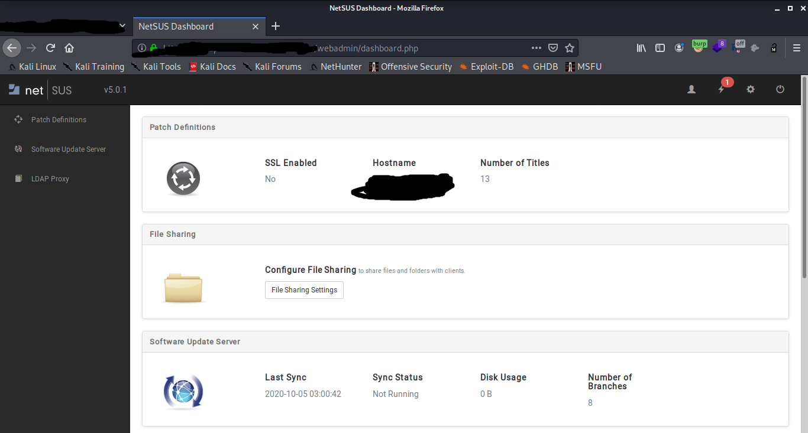
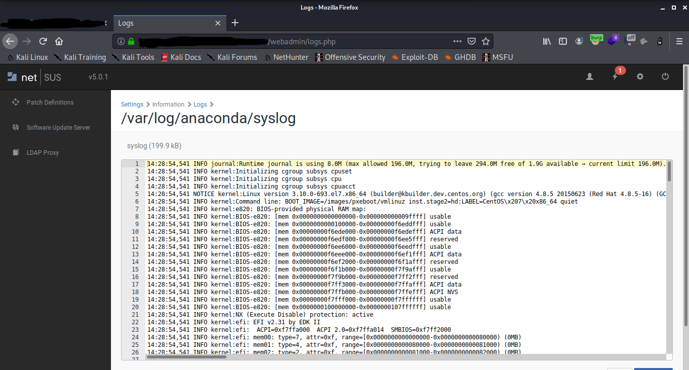

About the Write-up:
Greetings everyone, this is Shobhit Kumar Gangwar and today I'm going to share one of my recently discovery which is quite interesting.This is basically an Authentication Bypass which i found on a program on intigriti a few days ago. I'll be referring the target as redacted.com / Redacted Org.
Achieving Authentication Bypass:
This target was an update server of a very big organisation and was using netSUS ( NetBoot and Software Update services ) which is basically now deprecated by apple .
When i visited https://jamfdp.redacted.com , i was presented with a login screen as below.

Entering Default Credentials did not worked .
But i noticed that the response of login was returned a bit slow . So on checking burp history , i found out that the server is returning a 302 Response Code and then was redirecting me to login page .
The next thing i knew was response manipulation . Tried visiting /dashboard.php directly and the response retured was again a 302 Response Code as below .

After noticing this 302 Response Code , only one thing came into my mind was what if i change 302 to 200 .
On Chaning the response code , i was presented with the dashboard of the server and thus bypassing the Authenticaion of the portal as below .

The server contained numerous logs and update binaries and much more ...

POC Video:
Conclusion:
Always keep an eye over server response time and burp history .